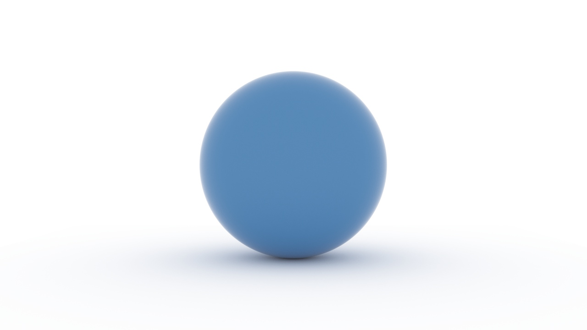

This sample is a minimal web page to render a MorphCharts scene in a browser. It creates a WebGPU ray-tracing renderer, loads a spec, and runs a render loop.
The example on this page can be tried directly using the link below. To build and run your own version, make sure you have the prerequisites in place.
canvas element to the pagerenderer for the canvasscene from a specscene to the renderer
Add a canvas element to the page with a width and height
attribute.
<canvas id="canvas" width="1280" height="720"></canvas><script type="importmap">
{
"imports": {
"core": "https://microsoft.github.io/morphcharts/lib/morphcharts-core.js",
"spec": "https://microsoft.github.io/morphcharts/lib/morphcharts-spec.js",
"webgpuraytrace": "https://microsoft.github.io/morphcharts/lib/morphcharts-webgpuraytrace.js"
}
}
</script>import * as Core from 'core';
import * as Spec from 'spec';
import * as WebGPURenderer from 'webgpuraytrace';The import map and module descriptions are discussed in the prerequisites.
This example uses the WebGPU ray-tracing renderer. The constructor
reads the canvas element's width and height attributes to set
the render target size:
const renderer = new WebGPURenderer.Main(canvas);
If necessary, you can override the defaults with an options object:
const renderer = new WebGPURenderer.Main(canvas, {
width: 1920,
height: 1080,
renderMode: "raytrace", // default
});await renderer.initializeAsync();
This performs one-time setup for the renderer (e.g. GPU device creation
for WebGPU) and initializes default resources needed for rendering.
Here is a minimal spec — a sphere on a white ground plane:
const specJSON = {
"width": 640,
"height": 360,
"marks": [
{
"type": "rect",
"geometry": "sphere",
"material": "glossy",
"encode": {
"enter": {
"xc": {"value": 320},
"yc": {"value": 180},
"width": {"value": 360}
}
}
},
{
"type": "rect",
"encode": {
"enter": {
"xc": {"value": 320},
"width": {"value": 1280},
"depth": {"value": 1280},
"fill": {"value": "white"}
}
}
}
]
};Parse the specJSON and create a scene:
const scene = await Spec.Plot.createSceneAsync(specJSON);renderer.loadScene(scene);
Loading a scene resets the renderer's visual collections and populates them from the
scene.
const maxSamples = 1000;
let previousTime = performance.now();
function tick(currentTime) {
const elapsed = currentTime - previousTime;
previousTime = currentTime;
renderer.updateAsync(elapsed);
renderer.renderAsync(elapsed);
if (renderer.frameCount < maxSamples) {
requestAnimationFrame(tick);
}
}
requestAnimationFrame(tick);
Each frame calls updateAsync (updates state) and renderAsync (dispatches a render
pass) on the renderer.
The ray-tracing renderer accumulates samples over multiple frames, so
you typically run the loop until renderer.frameCount
reaches a desired quality level (maxSamples in this example).